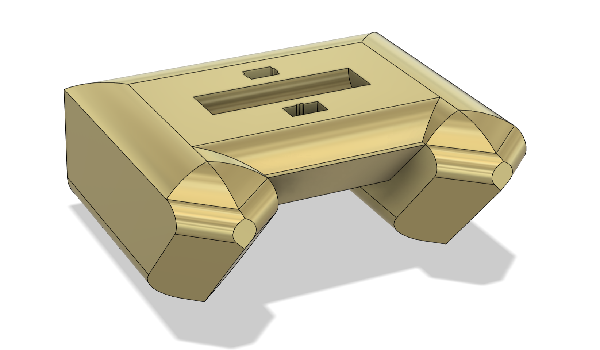

Awards
Collection of some of my greatest accomplishments so far
Learn more
Desktop robotic arm aid. Using Esp 32, MS24 and SG90 serovs, currently working with each sensor to detect certain movements and initiate code sequences.
Learn more
Final design project in ENGG 200 - Engineering Design at the University of Calgary. We were tasked to create a bluetooth based, dual raspberry-pi pico watercraft capable of manevering around obstacles.
Learn more
First place in the annual GeoHacks Hackathon, a 24-hour event involving documentation research, data collection, and decoding, followed by a final presentation. Huge shoutout to my teammates Jayden Flitton, Calum Scotland, and Erik Williams for agreeing to lose many hours of sleep and persist through strenuous computations and continually bugged code. Our team achieved the highest accuracy in the event by building a GNSS solution that handled raw RTK and PPP satellite data, processed through precise coordinate transformations in both Geodetic and Cartesian frames. Big thanks to Hexagon A&P for sponsoring the event, along with the Geomatics Engineering Student Society and all the volunteers for hosting such a well-run event.
Learn moreI'm a first year dual major and Schulich Leader at the University of Calgary. I'm love working on my side projects. I also enjoy sports, camping and hiking.
Collection of some of my greatest accomplishments so far
Learn more
Photos and visual logbook of my projects as an aspiring engineer
Learn more